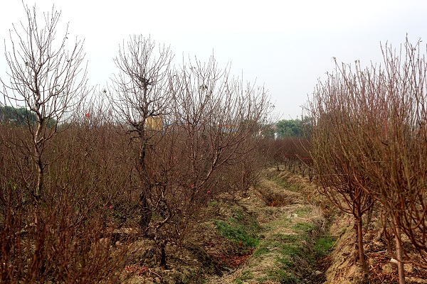
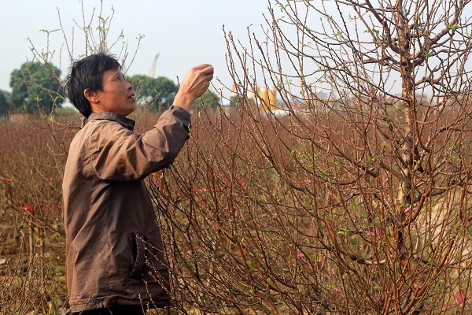

Người trồng đào làng La Cả ngóng chờ thời tiết
09h15 | 31/01/2016
(Sóng trẻ) - Những ngày gần cuối năm, thời tiết ấm nóng khiến đào bắt đầu nở. Người dân làng đào La Cả không khỏi lo lắng ngóng chờ thời tiết vì Tết năm trước, nhiều nhà đã bị mất trắng do đào nở sớm.
Nằm cách trung tâm Hà Nội khoảng 15km, làng đào La Cả (Dương Nội, Hà Đông) dần hình thành được thương hiệu riêng với diện tích hàng chục hecta. Bằng kinh nghiệm dự đoán thời tiết và bài học từ vụ mùa năm trước, người trồng đào đã căn chỉnh để đào phát triển theo đúng tiến độ.

Còn nhớ, Tết Nguyên Đán năm trước, thời tiết nắng nóng cùng nhuận tháng 9 khiến đào nở bung sớm. Người dân khổ sở vì lượng đào mất trắng. Năm nay, thời tiết cũng ấm hơn, người dân đã cẩn thận theo dõi diễn biến thời tiết để tính ngày tuốt lá, chăm bón cây sao cho nở hoa đúng dịp Tết.
Theo quan sát của PV, những chủ vườn đang rục rịch với công việc tuốt lá. Ông Vinh – một người trồng đào tại đây cho biết: "Thời điểm tuốt lá quyết định đến 70% tỉ lệ thành công. Năm nay thời tiết ấm nên cần tính toán thật kĩ thời điểm tuốt lá, đảm bảo đào sẽ bật nụ, nở hoa đúng dịp".

Người dân đang rục rịch tuốt lá để đào nở hoa đúng dịp
Tuy nhiên, người dân làng La Cả vẫn không khỏi nỗi lo lắng về thời tiết. Bởi lẽ, phải đến giữa tháng 12 Âm Lịch, người trồng đào mới biết chắc chắn là đào đẹp hay xấu. “Nếu trong thời gian tới, thời tiết thất thường thì người trồng đào sẽ vất vả thêm. Nhìn chung chưa thể nói trước được kết quả” – Ông Vinh cho biết.
Còn với cô Duyên, một hộ trồng đào khác tại làng La Cả cho hay: "Năm nay nhà trồng 7,8 sào, được hơn nghìn gốc. Gần Tết, người chơi đào tìm đến ngắm nhiều. Còn lái buôn thì mua đào từ 3 tháng trước. Thậm chí, có những người bên Nhật Tân cũng tìm đến mua đào cổ. Họ đem về "mông má", tỉa tót, tuốt lá, ép nụ rồi "gắn mác" Nhật Tân, giá đội lên 2,3 lần". Hiện tại, nhà cô cũng đã xuất đi được hơn 100 gốc đào cho các lái buôn từ các khu vực lân cận.
Một cây đào hơn 10 năm tuổi chuẩn bị “xuất” sang Nhật Tân
Theo nhận định của nhiều nhà vườn, giá đào năm nay sẽ tăng không đáng kể. Giá cả giao động từ 2 – 8 triệu/ gốc, 200.000 – 500.000đ/ cành tùy loại. Có những gốc đào cổ được chuyển tới Nhật Tân, giá từ 35 – 40 triệu đồng. Với vụ mùa mất trắng năm 2015, người dân La Cả hi vọng năm nay thời tiết thuận lợi, giá đào tăng bù cho những mất mát năm trước.
Thúy Nga